Released on April 30, 2008
(Next Release on May 7, 2008)
Factors Behind High Distillate Prices More Complex Than Gasoline
With gasoline and diesel fuel prices continuing to rise at the retail pump, many consumers may be feeling they are taking a bath on fuel expenses. This feeling may be well-placed, as a bathtub provides a good analogy for the supply-demand balance that affects petroleum product prices. Imagine a partially-filled bathtub. Now imagine turning on the faucet, which represents your supply. The drain represents consumption. If the faucet (supply) is adding more water than the drain removes, the water in the tub (inventory) will rise, and vice versa. Changes in stock levels reflect the balance between supply and consumption in any given time period. Consumption is met by refinery production, imports, and stock drawdowns. If consumption is greater than supply, inventories will be drawn down to fill the gap.
Gasoline inventories built to unusually high levels in early 2008, indicating an excess of supply relative to consumption. In the U.S. this excess supply is partially the result of gasoline use declining 0.8 percent in the early months of 2008 (January through the middle of March) over the same time in 2007, the increased use of ethanol in place of petroleum-based gasoline, and increased gasoline imports. While this surplus dampened the price of wholesale gasoline relative to crude oil, resulting in relatively low gasoline margins so far this year, crude prices have risen to record levels driven by tight global oil markets. The surge in crude oil prices has resulted in consumers paying record high gasoline prices.
In recent weeks, gasoline inventories have fallen sharply, even though imports have remained relatively steady, while demand has increased seasonally. This is mostly due to inventories being used as refiners undergo maintenance and reduce their capacity utilization in the face of low gasoline margins. A contributing factor has been the transition from winter to summer grade gasoline, encouraged by significant price discounts to move winter gasoline out of primary storage to make room for summer grade fuel. This is the typical seasonal pattern, but the drawdown occurred several weeks later than usual this year. While gasoline inventories are currently still in the upper half of the 5-year average range for this time of year, refinery margins have increased from very low levels in recent weeks. Even if the gasoline balance as reflected in inventory levels remains in the normal range this summer, high retail prices will continue to be driven largely by tight and expensive crude oil supplies.
Weekly Gasoline Stock Chart.jpg)
Unlike gasoline, distillate has maintained a high price margin relative to crude oil so far this year. While distillate stocks are now near the bottom of the 5-year average range, they were near the top of the average range at the beginning of February. So why have distillate wholesale prices been so high relative to crude oil for most of the winter? The answer lies in world distillate markets which have been unusually tight this year, placing extra pressure on U.S. diesel and heating oil prices over and above the high price of crude oil. High exports of distillate in January and February to help meet unusual needs in Latin American and Europe contributed to the drawdown. Yet the weekly distillate stock draws from the beginning of January through the second week in March (nearing the end of the heating season) were actually smaller this year than those in 4 out of the 5 previous years. Inventories continued to fall in ensuing weeks, however, reflecting the continued drain of inventories resulting from persistent winter weather in the Northeast combined with a relatively low inflow of distillate product from domestic refiners.
Weekly Distillate Stock Chart.jpg)
While weaker U.S. demand growth for distillates may slow the drain on domestic stock levels, strong world demand is expected to maintain tight distillate supply-demand balances, thereby limiting U.S. imports and potentially encouraging more exports. This could slow re-stocking ahead of the 2008-09 winter season, as well. Hence, distillate prices may remain high due to both high crude oil prices and high wholesale prices relative to crude oil.
U.S. Average Gasoline and Diesel Prices Again Advance to All-Time Highs
For the fifth consecutive week, the U.S. average retail price for regular gasoline moved higher, reaching yet another all-time high price of 360.3 cents per gallon. The average price has spiked 21.4 cents since April 14. On a regional basis, while prices increased throughout the country, they did so at a somewhat slower pace than was the case during the previous week. The largest increase occurred on the East Coast where the average price jumped by 11.7 cents to 360.1 cents per gallon. This was the only region of the country to experience an increase greater than 10 cents. The price in the Midwest increased by 9.8 cents to 356.8 cents per gallon, up by 64.3 cents from a year earlier. The average price in the Gulf Coast was up by 9.4 cents to 350.5 cents per gallon. The average price in the Rocky Mountains, the lowest of any region, rose to 347.8 cents per gallon, up 6.2 cents from the previous week. Once again, the West Coast average price increased the least of any region, moving up by 5.2 cents to 378.6 cents per gallon. Nonetheless, despite the relatively small increase, the average price was the highest of any region. The average price in California increased by 4.6 cents to hit 389.2 cents per gallon.
For the third week in a row, the U.S. average diesel price reached a new record high, increasing by 3.4 cents to 417.7 cents per gallon, 136.6 cents above a year ago. Although prices moved higher in all major regions, the pace of the increase slowed, rising by 3.4 cents. East Coast prices increased 2.3 cents to 423.0 cents per gallon, tallying the smallest increase for any of the five principal regions but still 143 cents above last year. (Prices were unchanged in New England, increased by 0.6 cent in the Central Atlantic, and grew by 3.1 cents in the Lower Atlantic.) In the Midwest, the price moved up 3.5 cents to 413.3 cents per gallon. The price in the Gulf Coast increased 3.6 cents to 411.3 cents per gallon, remaining the lowest of any region. The price in the Rocky Mountains moved up by 3 cents to 414.1 cents per gallon, 115.3 cents higher than a year earlier. On the West Coast, the average price went up the most of any region, increasing by 5.7 cents to 431.2 cents per gallon, 136 cents higher than last year. In California, the average price increased by 7.3 cents to 439.0 cents per gallon.
Propane Inventories Push Higher
The Nation’s primary supply of propane continued higher last week with a nearly million-barrel gain that pushed inventories up to an estimated 28.5 million barrels as of April 25, 2008. Slightly lower production and a sharp drop in imports last week contributed to moderate the weekly build. Gulf Coast inventories posted the largest weekly gain within the major propane consuming regions with a 0.6 million-barrel gain, while Midwest inventories followed with a weekly increase that measured 0.3 million barrels. East Coast inventories managed a 0.1 million-barrel gain last week, while the combined Rocky Mountain/West Coast region posted a slight gain. Propylene non-fuel use inventories remained relatively flat last week but accounted for a smaller 7.4 percent of total propane/propylene inventories from the prior week’s 7.7 percent share.
Text from the previous editions of “This Week In Petroleum” is now accessible through a link at the top right-hand corner of this page.
| Retail Prices (Cents Per Gallon) | |||||||
| 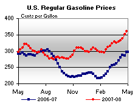 | 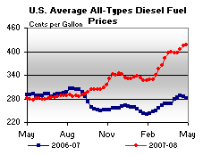 | ||||||
| Retail Data | Changes From | Retail Data | Changes From | ||||
| 04/28/08 | Week | Year | 04/28/08 | Week | Year | ||
| Gasoline | 360.3 | Diesel Fuel | 417.7 | ||||
| Spot Prices (Cents Per Gallon) | |||||||||||||||||||||||||||||||||||||||
| 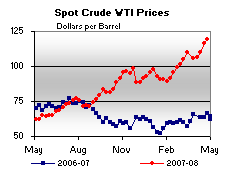 | 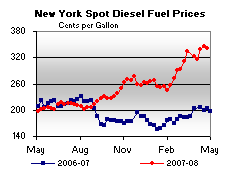 | ||||||||||||||||||||||||||||||||||||||
| 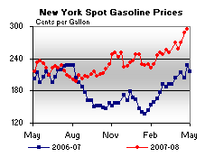 | 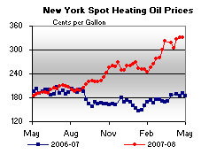 | ||||||||||||||||||||||||||||||||||||||
|
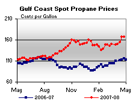 | ||||||||||||||||||||||||||||||||||||||
| Stocks (Million Barrels) | |||||||
| 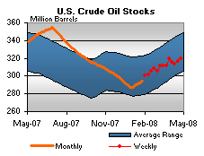 | 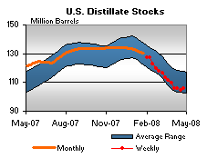 | ||||||
| 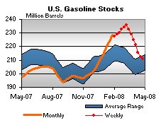 | 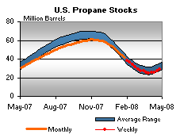 | ||||||
| Stocks Data | Changes From | Stocks Data | Changes From | ||||
| 04/25/08 | Week | Year | 04/25/08 | Week | Year | ||
| Crude Oil | 319.9 | Distillate | 105.8 | ||||
| Gasoline | 211.1 | Propane | 28.540 | ||||